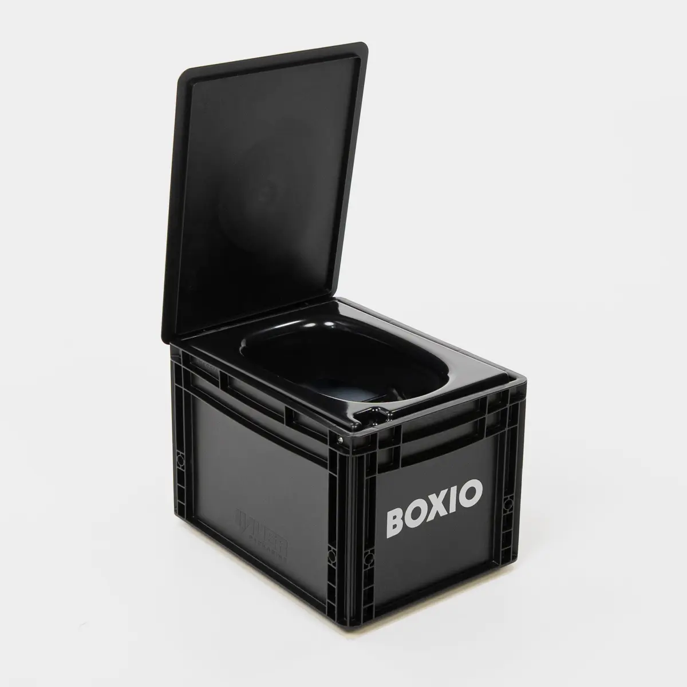

8 miesięcy w trasie z suchą toaletą separacyjną: Moje szczere doświadczenie

Kiedy po raz pierwszy zetknąłem się z tematem toalet dla kamperów przed moją wielką podróżą z T4, szybko stało się dla mnie jasne: toaleta chemiczna nie wchodzi w grę. Sucha toaleta rozdzielająca od razu przekonała mnie pod względem koncepcji. Dziś, po ośmiu miesiącach podróży z dokładnie takim systemem, mogę powiedzieć: jestem absolutnie zachwycony – nawet jeśli nie wszystko poszło idealnie od razu.
Trudny początek z moim BOXIO
Moja pierwsza sucha toaleta rozdzielająca była BOKS. Kompaktowy format i pomysł separacji na początku brzmiały idealnie dla mojego małego T4. Jednak nie byłem zadowolony z konkretnego produktu w codziennym życiu. Miałem kilka propozycji ulepszeń i przez jakiś czas poważnie rozważałem zbudowanie własnej toalety z suchym separacją, opierając się na podstawowej zasadzie.
Największy problem: Wylot lub lejek, przez który mocz przepływa do pojemnika, się chwiał. Jeśli siedziałeś na górze, połączenie nie było wystarczająco stabilne – a czasem mocz się wyłączał. Efekt: nie trafił do pojemnika, lecz do samego pudełka. To było dalekie od przyjemnego i musiało być dokładnie czyszczone za każdym razem później. To dokładnie ten punkt, którego chcesz uniknąć, stosując dobrą suchą toaletę separacyjną.
Targi w Düsseldorfie i idealne rozwiązanie
Przełom nastąpił, gdy przypadkiem byłem na targach w Düsseldorfie i odkryłem tam inną firmę, która oferuje suchą toaletę separacyjną, gdzie dokładnie te słabości zostały naprawione. Wszystkie problemy, które mnie drażniły przy pierwszym modelu, po prostu tutaj nie istniały. Odpływ moczu był twardy i stabilny, nic się nie chwiało, nic nie poszło nie tak. Chętnie podlinkuję tę firmę, gdy tylko podam szczegóły – ponieważ mogę naprawdę polecić to rozwiązanie bez zastrzeżeń.
Dlaczego separacja moczu jest tak genialna
To, co wciąż najbardziej mnie ekscytuje w całym systemie, to coś bardzo prostego: można po prostu wyrzucić mocz do dowolnej zwykłej toalety. Niezależnie od tego, czy na postoju, w kawiarni czy u znajomych – wystarczy opróżnić pojemnik do muszli klozetowej, spłukać i gotowe. Brak odpadów niebezpiecznych, brak specjalnej stacji utylizacji, brak chemikaliów. To ogromna ulga w codziennym życiu, zwłaszcza gdy, tak jak ja, spędzasz dużo czasu w miejscach, gdzie nie ma wyznaczonych stacji wyśmieniania kamperów.
Moje rozwiązanie dla sektora ciał stałych
Na stałe miejsce – pieszczotliwie nazywane "kodem" w żargonie kamperów – stworzyłem podczas podróży własny mały system, który działał naprawdę dobrze. Kupiłem sobie żwirek w granulatach i zabrałem go ze sobą. Dodatkowo miałem ze sobą małe worki na organiczne odpady. Moje podejście: najpierw włóż worek na śmieci do drugiego pojemnika, potem garść tego żwirku na pellet, aby wilgoć była niezawodnie wchłaniana.
Efekt naprawdę mnie zaskoczył: nigdy nie śmierdziało. Co najwyżej pachniał lekko trocinami, drewnem – naprawdę przyjemnym, neutralnym zapachem. A najlepsze jest to, że nie musiałem mozolnie czyścić pojemnika. Właśnie o to moim zdaniem większość ludzi się brzydzi, gdy myśli o toalecie z suchym separacją – o konieczności ręcznego czyszczenia pojemnika na odpady stałe. Całkowicie to rozumiem, oczywiście to nie jest miłe. Ale w moim rozwiązaniu workowym ten krok został całkowicie pominięty.
Nieoczekiwana zaleta: problem odpadów
Czego na początku nawet nie brałem pod uwagę: ta metoda rozwiązała też zupełnie inny problem, który ciągle mnie zajmował podczas podróży – utylizację odpadów. Kiedy dużo podróżujesz, w końcu zauważasz, że wiele publicznych koszy na śmieci ma bardzo małe wejścia. Często nie da się tam włożyć dużych worków na śmieci, a generalnie, jako biwakowicz, staram się produkować jak najmniej odpadów i rozsądnie je wyrzucać. Dzięki małym workom na organiczne odpady z mojego systemu toaletowego automatycznie zawsze miałem małe, dobrze zamykalne porcje, które można było łatwo wyrzucić gdziekolwiek. Idealne rozwiązanie poboczne problemu, który wcześniej musiałem rozwiązać osobno.
Oszczędza miejsce i nadaje się do codziennego użytku
Kolejną zaletą bym nie lekceważyła: rozmiar. Moja sucha toaleta rozdzielająca była na tyle mała, że zniknęła na półce w moim T4 w osobnym pudełku. Codzienne życie było niezwykle proste: wyciągnąć pudełko, wykonać zadanie, założyć pokrywkę, przesunąć pudełko z powrotem – gotowe. Bez wysiłku, bez kłopotów, a przede wszystkim: bez zapachów w środku, mimo że system był przechowywany tak kompaktowo.
Moje wnioski po ośmiu miesiącach
Ostatecznie nie byłem zadowolony z mojego BOXIO – było tam zbyt wiele drobnych, ale irytujących wad konstrukcyjnych w moim codziennym życiu. Wciąż uważam, że zasada suchej toalety separacyjnej jest rozsądna. Dzięki bardziej stabilnemu rozwiązaniu, które pasuje do mojego zestawu, oszczędza miejsce i jest proste; Dzięki mojemu żwirkowi i organicznemu workowi można też ograniczyć sprzątanie.
Dla tych, którzy wciąż zastanawiają się, czy warto przejść z toalet chemicznych: z mojego punktu widzenia zdecydowanie tak. Dopiero przy wyborze modelu warto dokładnie się przyjrzeć i nie sięgać po pierwszą wycenę – chciałbym pominąć drugie badanie od początku.
Do zobaczenia wkrótce i życzę udanej podróży,
twoja nazwa Tussy 💛